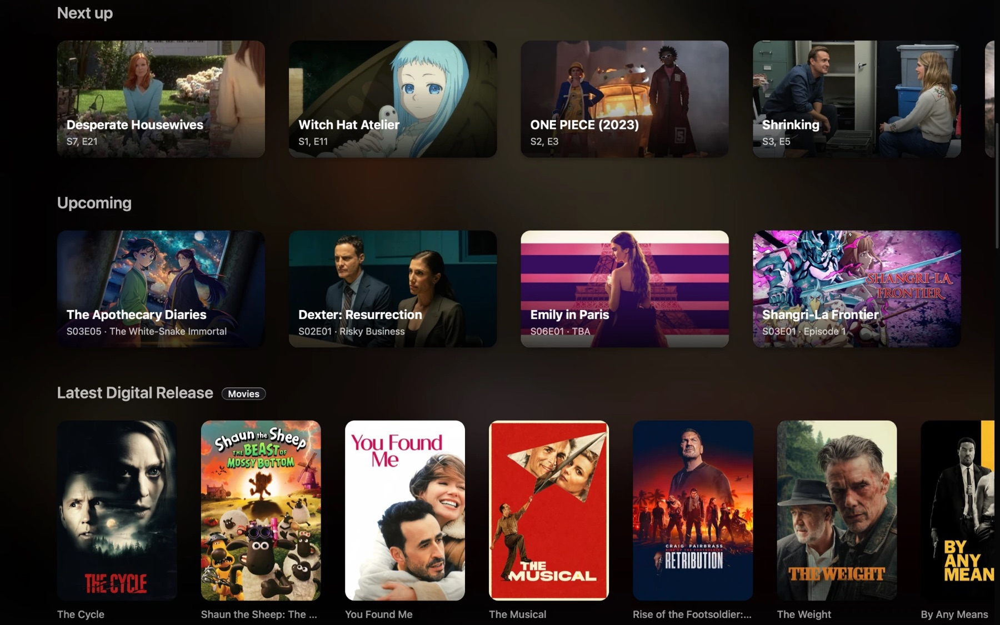
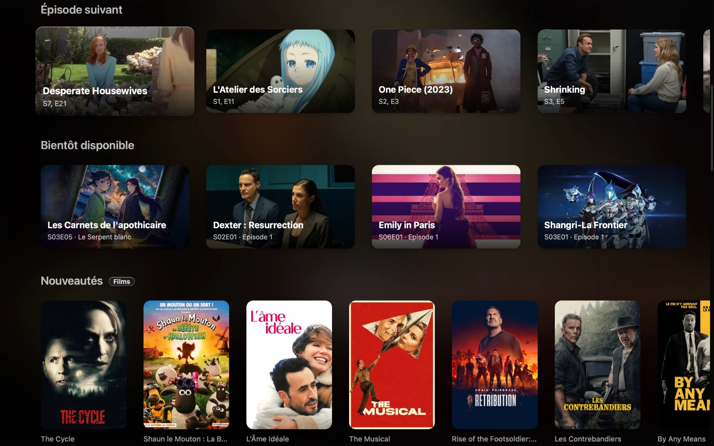
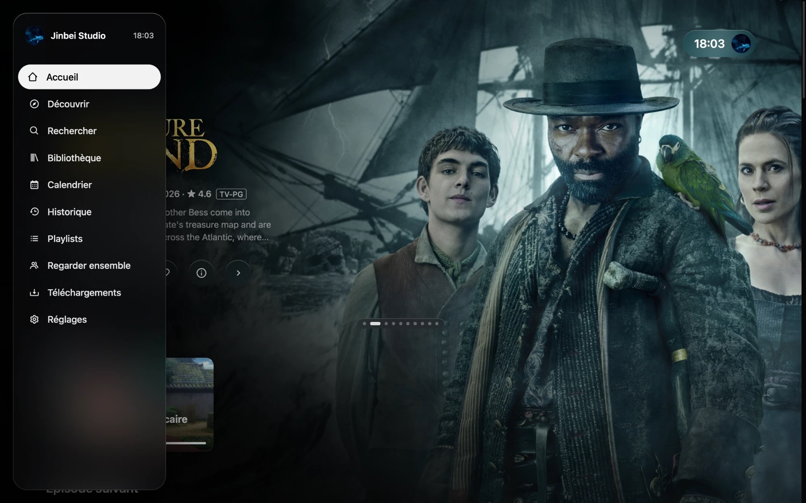

The Jinbei Studio app, for your TV, computer and phone.L’application Jinbei Studio, pour votre TV, votre ordinateur et votre téléphone.
Everything in one place, on the screen you like.Tout au même endroit, sur l’écran que vous préférez.
TV, computer, phone: the same library, the same look.TV, ordinateur, téléphone : la même bibliothèque, le même style.
Pick the audio and the subtitles you want, in a tap.Choisissez l’audio et les sous-titres, en un geste.
Start on the TV, finish on your phone.Commencez sur la TV, terminez sur votre téléphone.
Open the app and the next thing to watch is already there.Ouvrez l’app : la prochaine chose à regarder est déjà là.


The next episode of every series you follow, ready to play.L’épisode suivant de chaque série que vous suivez, prêt à lancer.
What’s coming and when, so you know what’s next.Ce qui arrive et quand, pour savoir ce qui vient.
New films and series as they arrive, in posters you can browse.Les nouveaux films et séries dès leur arrivée, en affiches à parcourir.

A simple, beautiful way to find something and press play.Une façon simple et belle de trouver quoi regarder et lancer la lecture.
It picks the best quality for your screen and names it in plain words. Not convinced? Choose another version in one tap.Elle choisit la meilleure qualité pour votre écran et la nomme en mots simples. Pas convaincu ? Choisissez une autre version en un geste.
Rows for what’s popular, what’s new and what comes next in your series, so there’s always something to watch.Des rangées pour ce qui est populaire, nouveau, et la suite de vos séries : il y a toujours quelque chose à regarder.
A calendar of what’s coming, and Next up takes you straight to the following episode.Un calendrier de ce qui arrive, et Épisode suivant vous mène directement à la suite.
Start a session and watch in sync with family, wherever they are.Lancez une session et regardez en même temps que votre famille, où qu’elle soit.
Build playlists, find everything you saved, and download a film before the trip.Créez des playlists, retrouvez tout ce que vous avez gardé, et téléchargez un film avant le voyage.
Arrows, OK, Back. Or point and click. It feels the same on every screen.Flèches, OK, Retour. Ou pointez et cliquez. C’est pareil sur tous les écrans.
Updates arrive by themselves on computers and phones.Les mises à jour arrivent toutes seules sur ordinateur et téléphone.
Macs with an M chip (M1 and newer), or Intel.Mac avec puce M (M1 et plus récent), ou Intel.
Amazon Fire TV Stick and Fire TV.Amazon Fire TV Stick et Fire TV.
Phones, tablets and Android TV.Téléphones, tablettes et Android TV.
Needs the TV’s developer mode.Demande le mode développeur de la TV.
Open your device below.Ouvrez votre appareil ci-dessous.
.zip, then drag Jinbei Studio into your Applications folder..zip, puis glissez Jinbei Studio dans votre dossier Applications.github.com/JinbeiStudio/AIOStreams/releases/latest, then Go. On the page that opens, choose the file ending in armeabi-v7a.apk.armeabi-v7a file: it works on all Fire TV Sticks.github.com/JinbeiStudio/AIOStreams/releases/latest, puis Go. Sur la page qui s’ouvre, choisissez le fichier qui finit par armeabi-v7a.apk.armeabi-v7a : il fonctionne sur toutes les Fire TV Stick.arm64-v8a.apk file (it suits almost every phone and tablet made in the last years).arm64-v8a.apk (il convient à presque tous les téléphones et tablettes récents)..ipk file..ipk téléchargé..wgt with your certificate (Tizen Studio: Tools → Package Manager, or the tizen install command)..wgt téléchargé avec votre certificat (Tizen Studio : Tools → Package Manager, ou la commande tizen install)..flatpak file for your processor.flatpak install --user ./jinbei-studio-linux-x64.flatpak (use the name of the file you downloaded).flatpak run followed by the app’s name, or from your applications menu..flatpak correspondant à votre processeur.flatpak install --user ./jinbei-studio-linux-x64.flatpak (avec le nom du fichier téléchargé).Six steps, then it’s yours.Six étapes, et c’est à vous.
Open the app and type the profile address Julien gave you, then Connect.Ouvrez l’app et saisissez l’adresse de profil donnée par Julien, puis Se connecter.
Choose your name and enter the PIN or password you were given.Choisissez votre nom et saisissez le code PIN ou le mot de passe reçu.
The rows follow what’s popular. Continue Watching brings you back where you stopped.Les rangées suivent ce qui est populaire. Continuer vous ramène là où vous étiez.
Choose a film or a series. For a series, pick the season and the episode first.Choisissez un film ou une série. Pour une série, choisissez d’abord la saison et l’épisode.
In the player, the menus change the subtitles and the audio language. Back leaves the player.Dans le lecteur, les menus changent les sous-titres et la langue audio. Retour quitte le lecteur.
TV remote: arrows move, OK chooses, Back goes back. Mouse or phone: click or tap.Télécommande de TV : les flèches déplacent, OK choisit, Retour revient. Souris ou téléphone : cliquez ou touchez.